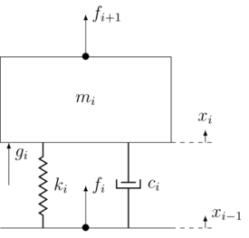
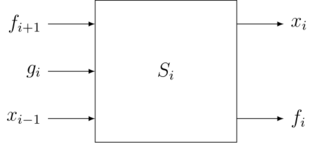
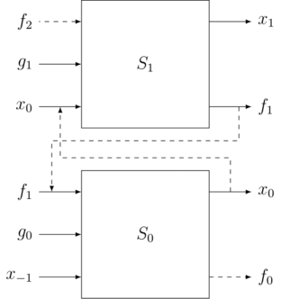
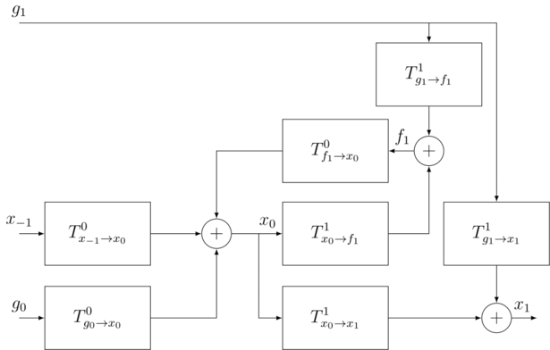
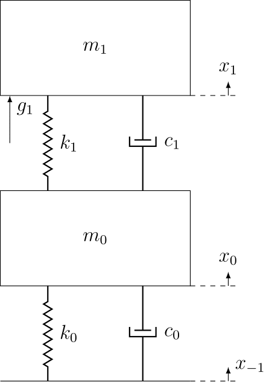
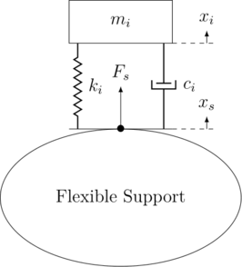
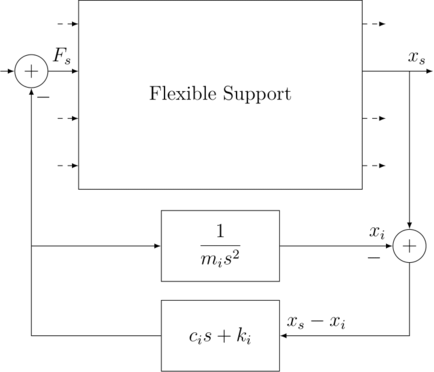

How to connect a model to a flexible support
Table of Contents
1 Method 1 - Connection of multiple Mass-Spring-Damper systems
1.1 Mass-Spring-Damper representation
Let's consider a simple Mass-Spring-Damper system that is on top of an other mecanical system (see figure 1).

Figure 1: Basic Mass-Spring-Damper
Second Newton's laws of motion on the mass \(m_i\):
\[ m_i \ddot{x} = k_i (x_{i-1} - x_i) + c_i (\dot{x_{i-1}} - \dot{x_i}) + g_i + f_{i+1} \]
\[ m_i \ddot{x} + c_i \dot{x_i} + k_i x_i = c_i \dot{x_{i-1}} + k_i x_{i-1} + g_i + f_{i+1} \]
By doing a Laplace tranformation, we have:
\[ ( m_i s^2 + c_i s + k_i ) X_i = ( c_i s + k_i ) X_{i-1} + G_i + F_{i+1} \]
Finally:
\begin{equation} X_i = \frac{c_i s + k_i}{m_i s^2 + c_i s + k_i} X_{i-1} + \frac{1}{m_i s^2 + c_i s + k_i} G_i + \frac{1}{m_i s^2 + c_i s + k_i} F_{i+1} \end{equation}\[ X_i = T_{x_{i-1} \rightarrow x_i} X_{i-1} + T_{g_i \rightarrow x_i} G_i + T_{f_{i+1} \rightarrow x_i} F_{i+1} \]
With:
\begin{equation*} \begin{cases} T_{x_{i-1} \rightarrow x_i} &= \frac{c_i s + k_i}{m_i s^2 + c_i s + k_i}\\ T_{g_i \rightarrow x_i} &= \frac{1}{m_i s^2 + c_i s + k_i}\\ T_{f_{i+1} \rightarrow x_i} &= \frac{1}{m_i s^2 + c_i s + k_i} \end{cases} \end{equation*}Now, let's express the force \(f_i\):
\[ f_i = k_i (x_i - x_{i-1}) + c_i (\dot{x_i} - \dot{x_{i-1}}) \]
By doing a Laplace tranformation, we have:
\[ F_i = (X_i - X_{i-1}) ( c_i s + k_i ) \]
And finally by reinjecting \(X_i\) into the last equation, we have the following equation:
\begin{equation} F_i = \frac{- m_i s^2 (c_i s + k_i)}{m_i s^2 + c_i s + k_i} X_{i-1} + \frac{c_i s + k_i}{m_i s^2 + c_i s + k_i} G_i + \frac{c_i s + k_i}{m_i s^2 + c_i s + k_i} F_{i+1} \end{equation}\[ F_i = T_{x_{i-1} \rightarrow f_i} X_{i-1} + T_{g_i \rightarrow f_i} G_i + T_{f_{i+1} \rightarrow f_i} F_{i+1} \]
With:
\begin{equation*} \begin{cases} T_{x_{i-1} \rightarrow f_i} &= \frac{- m_i s^2 (c_i s + k_i)}{m_i s^2 + c_i s + k_i}\\ T_{g_i \rightarrow f_i} &= \frac{c_i s + k_i}{m_i s^2 + c_i s + k_i}\\ T_{f_{i+1} \rightarrow f_i} &= \frac{c_i s + k_i}{m_i s^2 + c_i s + k_i} \end{cases} \end{equation*}1.2 General representation
So we have a representation of the system with 3 inputs and 2 outputs (figure 2). This system is governed by the following equation:
\begin{equation} \begin{pmatrix} x_i \\ f_i \end{pmatrix} = \begin{pmatrix} T_{x_{i-1} \rightarrow x_i} & T_{g_i \rightarrow x_i} & T_{f_{i+1} \rightarrow x_i} \\ T_{x_{i-1} \rightarrow f_i} & T_{g_i \rightarrow f_i} & T_{f_{i+1} \rightarrow f_i} \end{pmatrix} \begin{pmatrix} x_{i-1}\\ g_i\\ f_{i+1} \end{pmatrix} \end{equation}
Figure 2: Input/Output representation of a system
That representation of a system with 3 inputs and 2 outputs can be generalized to any system as long as we have all the transfer functions \(T_{g_i\rightarrow x_i}\),…
1.3 System connection - General Case
1.4 System connection - 2 System case
Let's begin with a simple case of only 2 systems connected. Then, it is easy to generalized.
For now, let's ignore:
- \(f_0\) the force applied on the system bellow \(S_0\) (probably the ground)
- \(f_2\) the force applied one \(S_1\) because we suppose that there is no system of top of \(S_1\)
The connection of the 2 systems (figure 3) makes a connected system with 3 inputs (\(x_{-1} \quad g_0 \quad g_1\)) and 1 outputs \(x_1\).

Figure 4: Connect 2 systems
We can represent this system with a bloc diagram (figure 5).

Figure 5: Connect 2 systems - Bloc representation
Analytically:
\[ x_1 = T_{g_1 \rightarrow x_1}^1 g_1 + T_{x_0 \rightarrow x_1}^1 x_0 \]
\begin{align*} x_0 & = T_{g_0 \rightarrow x_0}^0 g_0 + T_{x_{-1} \rightarrow x_0}^0 x_{-1} + T_{f_1 \rightarrow x_0}^0 f_1\\ & = T_{g_0 \rightarrow x_0}^0 g_0 + T_{x_{-1} \rightarrow x_0}^0 x_{-1} + T_{f_1 \rightarrow x_0}^0 (T_{x_0 \rightarrow f_1}^1 x_0 + T_{g_1 \rightarrow f_1}^1 g_1) \end{align*}\[ x_0 = \frac{T_{g_0 \rightarrow x_0}^0}{1 - T_{f_1 \rightarrow x_0}^0 T_{x_0 \rightarrow f_1}^1} g_0 + \frac{T_{x_{-1} \rightarrow x_0}^0}{1 - T_{f_1 \rightarrow x_0}^0 T_{x_0 \rightarrow f_1}^1} x_{-1} + \frac{T_{f_1 \rightarrow x_0}^0 T_{g_1 \rightarrow f_1}^1}{1 - T_{f_1 \rightarrow x_0}^0 T_{x_0 \rightarrow f_1}^1} g_1 \]
By reinjecting \(x_0\) into the first equation, we have an expression of the output \(x_1\) function of the 3 inputs \(x_{-1} \quad g_0 \quad g_1\).
\[ x_1 = (T_{g_1 \rightarrow x_1}^1 + \frac{T_{x_0 \rightarrow x_1}^1 T_{f_1 \rightarrow x_0}^0 T_{g_1 \rightarrow f_1}^1}{1 - T_{f_1 \rightarrow x_0}^0 T_{x_0 \rightarrow f_1}^1}) g_1 + \frac{T_{x_0 \rightarrow x_1}^1 T_{g_0 \rightarrow x_0}^0}{1 - T_{f_1 \rightarrow x_0}^0 T_{x_0 \rightarrow f_1}^1} g_0 + \frac{T_{x_0 \rightarrow x_1}^1 T_{x_{-1} \rightarrow x_0}^0}{1 - T_{f_1 \rightarrow x_0}^0 T_{x_0 \rightarrow f_1}^1} x_{-1} \]
\[ x_1 = T_{g_1 \rightarrow x_1} g_1 + T_{g_0 \rightarrow x_1} g_0 + T_{x_{-1} \rightarrow x_1} x_{-1} \]
With:
\begin{equation*} \begin{cases} T_{g_1 \rightarrow x_1} &= T_{g_1 \rightarrow x_1}^1 + \frac{T_{x_0 \rightarrow x_1}^1 T_{f_1 \rightarrow x_0}^0 T_{g_1 \rightarrow f_1}^1}{1 - T_{f_1 \rightarrow x_0}^0 T_{x_0 \rightarrow f_1}^1}\\ T_{g_0 \rightarrow x_1} &= \frac{T_{x_0 \rightarrow x_1}^1 T_{g_0 \rightarrow x_0}^0}{1 - T_{f_1 \rightarrow x_0}^0 T_{x_0 \rightarrow f_1}^1}\\ T_{x_{-1} \rightarrow x_1} &= \frac{T_{x_0 \rightarrow x_1}^1 T_{x_{-1} \rightarrow x_0}^0}{1 - T_{f_1 \rightarrow x_0}^0 T_{x_0 \rightarrow f_1}^1} \end{cases} \end{equation*}And now we have the analytical expression of the transfer functions of the connected system.
1.5 System connection - Example
Let's say that we have a flexible support \(S_0\). The only thing we know about this support is the relation between a force applied on top of it to its displacement: \(T_{f_1 \rightarrow x_0}^0\).
Know, we want to add a mass-spring-damper system on top of this flexible support. We would like to know the displacement of the mass-spring-damper system from a force applied to it, that is to say we want \(T_{g_1 \rightarrow x_1}\).
\[ T_{g_1 \rightarrow x_1} = T_{g_1 \rightarrow x_1}^1 + \frac{T_{x_0 \rightarrow x_1}^1 T_{f_1 \rightarrow x_0}^0 T_{g_1 \rightarrow f_1}^1}{1 - T_{f_1 \rightarrow x_0}^0 T_{x_0 \rightarrow f_1}^1} \]
\begin{equation*} \begin{cases} T_{x_0 \rightarrow x_1}^1 &= \frac{c_i s + k_i}{m_i s^2 + c_i s + k_i}\\ T_{g_1 \rightarrow x_1}^1 &= \frac{1}{m_i s^2 + c_i s + k_i}\\ T_{g_1 \rightarrow f_1}^1 &= \frac{c_i s + k_i}{m_i s^2 + c_i s + k_i}\\ T_{x_0 \rightarrow f_1}^1 &= \frac{- m_i s^2 (c_i s + k_i)}{m_i s^2 + c_i s + k_i} \end{cases} \end{equation*}We can calculate \(T_{g_1 \rightarrow x_1}\), and we obtain:
\begin{equation} T_{g_1 \rightarrow x_1} = \frac{T_{f_1 \rightarrow x_0}^0(c_1 s + k_1) + 1}{m_i s^s + c_1 s + k_1 + T_{f_1 \rightarrow x_0}^0 m_i s^s (c_1 s + k_1)} \end{equation}For instance if the flexible support is just a mass-spring-damper system with parameters \(m_0\) \(k_0\) \(c_0\):
\[T_{f_1 \rightarrow x_0}^0 = \frac{1}{m_0 s^2 + c_0 s + k_0}\]
And we finally have:
\begin{equation} T_{g_1 \rightarrow x_1} = \frac{(c_1 s + k_1) + (m_0 s^2 + c_0 s + k_0)}{(m_0 s^2 + c_0 s + k_0)(m_1 s^2 + c_1 s + k_1) + m_1 s^2 (c_1 s + k_1)} \end{equation}Let's verify this.

Figure 6: Dual mass-spring-damper system
We can applied the second law of Newton to the two masses:
\begin{align*} m_1 \ddot{x_1} & = c_1(\dot{x_0} - \dot{x_1}) + k_1 (x_0 - x_1) + g_1\\ m_0 \ddot{x_0} & = c_0(\dot{x_{-1}} - \dot{x_0}) + k_0 (x_{-1} - x_0) + c_1(\dot{x_1} - \dot{x_0}) + k_1 (x_1 - x_0) \end{align*}By doing a Laplace transform:
\begin{align*} (m_1 s^2 + c_1 s + k_1) x_1 & = (c_1 s + k_1) x_0 + g_1\\ (m_0 s^2 + c_0 s + k_0 + c_1 s + k_1) x_0 & = (c_0 s + k_0) x_{-1} + (c_1 s + k_1) x_1 \end{align*}The second equation gives us: \[ x_0 = \frac{c_0 s + k_0}{m_0 s^2 + c_0 s + k_0 + c_1 s + k_1} x_{-1} + \frac{c_1 s + k_1}{m_0 s^2 + c_0 s + k_0 + c_1 s + k_1} x_1 \]
And if we reinject \(x_0\) into the first equation, we have:
\[ (m_1 s^2 + c_1 s + k_1) x_1 = \frac{(c_1 s + k_1) (c_0 s + k_0)}{m_0 s^2 + c_0 s + k_0 + c_1 s + k_1} x_{-1} + \frac{(c_1 s + k_1) (c_1 s + k_1)}{m_0 s^2 + c_0 s + k_0 + c_1 s + k_1} x_1 + g_1 \]
Finally:
\[ \frac{m_1 s^2 (c_1 s + k_1) + (m_0 s^2 + c_0 s + k_0)(m_1 s^2 + c_1 s + k_1)}{m_0 s^2 + c_0 s + k_0 + c_1 s + k_1} x_1 = \frac{(c_1 s + k_1) (c_0 s + k_0)}{m_0 s^2 + c_0 s + k_0 + c_1 s + k_1} x_{-1} + g_1 \]
\[ x_1 = \frac{(c_1 s + k_1) (c_0 s + k_0) (m_0 s^2 + c_0 s + k_0 + c_1 s + k_1)}{(m_0 s^2 + c_0 s + k_0 + c_1 s + k_1) (m_1 s^2 + c_1 s + k_1) (m_1 s^2 (c_1 s + k_1) + (m_0 s^2 + c_0 s + k_0)(m_1 s^2 + c_1 s + k_1))} x_{-1} + \frac{m_0 s^2 + c_0 s + k_0 + c_1 s + k_1}{m_1 s^2 (c_1 s + k_1) + (m_0 s^2 + c_0 s + k_0)(m_1 s^2 + c_1 s + k_1)} g_1 \]
And we find \(T_{g_1 \rightarrow x_1}\) as before.
\begin{equation} T_{g_1 \rightarrow x_1} = \frac{(c_1 s + k_1) + (m_0 s^2 + c_0 s + k_0)}{(m_0 s^2 + c_0 s + k_0)(m_1 s^2 + c_1 s + k_1) + m_1 s^2 (c_1 s + k_1)} \end{equation}1.6 Matlab Implementation
A small matlab toolbox have been developed and is accessible on Github. This toolbox contains many functions that easily permit to create systems using the presented architecture and connect them.
createElementpermits to create a mass-spring-damper system (2nd, 3rd and 4th arguments, the 1st on is the number \(i\)). It creates a state space system with named inputs and outputs based on \(i\)connectElementspermits to connect all the elementscreateForceActuatorpermits to create a force actuator between 2 systems (1st and 2nd arguments)connectForceActuatorpermits to connect the actuator to the systemcreateDisplacementSensorpermits to create a displacement sensor between 2 elementsconnectDisplacementSensorpermits to connect the sensor to the system
All functions are well documented, you can type help functionName to have some help. Also, you should check the demo files inside the demo folder.
2 Method 2 - How to connect a model on top of a flexible support

Figure 7: Flexible support
Second Newton's laws of motion on the mass \(m_i\):
\[ m_i \ddot{x_i} = k_i (x_s - x_i) + c_i (\dot{x_s} - \dot{x_i}) \]
After Laplace transformation:
\[ m_i s^2 x_i = (c_i s + k_i) (x_s - x_i) \]
Let's express \(F_s\):
\[ F_s = (c_i s + k_i) (x_i - x_s) \]

Figure 8: Flexible support Connection
In order to connect the system to the flexible support, we only need the transfer function between \(F_s\) and \(x_s\). This is usually done by identification.